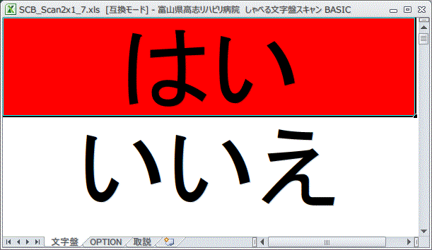

かならずお読みください→
しゃべる文字盤スキャン BASIC
Windows XP+Excel2000 と Windows 7+Excel2010 で動作確認しています
Microsoft Excel for communication aids

コミュニケーション困難は、伝の心やレッツチャットなどコミュニケーションエイドを使えば解決できると思っていませんか？
これらの道具を活用している人々は現在色々な機会に紹介されています。テレビ番組に登場することもあります。これらの人々のほとんどはうまくやっています。だからきっとどの人もうまくいくと決めこんではいけません。うまくいかない人は決して少なくありません。
そして今はうまくできている人たちも、はじめからそうだったわけではありません。ほとんどの人は、苦労してがんばってもちっともうまくいかず途方にくれた経験したことでしょう。番組や記事によっては、苦労話を避けることもあります。報道されたことも重要ですが、報道されなかったことの方に気がつくことは受け手として大切だと思いますが、いかがでしょうか。
またこんな話もあります。あるとき、発話が困難な方が当院においでになりお会いしました。この方は麻痺が強くほとんど動けません。そのためコミュニケーションでたいへんお困りでした。その後ご自身とご家族そしてスタッフのがんばりによって、スイッチ操作がだんだんとできるようになりました。そしてご家族の呼びかけに（PPSスイッチの）ブザー音での返事などもできるようになりました。さて次はコミュニケーションエイドをと話を進めたいところです。しかしご家族にお聞きすると、この方はパソコンなど機械ものは『ちょっと苦手』だそうで、携帯電話などもおやりにならなかったそうです。また体力面で余裕がなく，コミュニケーションエイドをマスタするには少し足りないかなと思われました。
この方のようにスイッチ操作可能でも、伝の心やレッツチャットなど『機能がたくさんあるコミュニケーションエイド』を使うにはまだハードルが高い場合があります。がんばって練習しているのになかなか使いこなせないと、悲しい気持になったり、やめたくなったりします。疲れやすい人やこのような機械ものが苦手な人には、ほどほど上手になったら、ほどほど役に立ち、ほどほどうれしい、コミュニケーションエイドの初心者コースが必要でした。これは暗に小学校のスキー教室をイメージしています。上級者も初心者もそれぞれ楽しいそれぞれうれしい。単なる技術の上達ではなく、幸せな時間をもつことを優先していかないとこの行事はおかしなことになりかねません。コミュニケーションもこれによく似ています。
またコミュニケーションのニーズが高く、あれこれやりたいことが多い人には、伝の心など機能が豊富な道具がふさわしいと思います。（このような人々の意見を取り入れて作られた結果こうなったのだと思います。）言いたいことがたくさんあるならば、みるみる操作が上手になり、気持ちもからだも充実していく。そんな人もたくさんいます。しかしその一方で、もともと言葉の少ない、静かにしていたい人にとって、これらはかなり大げさな道具で機能をもてあましがちになることもよくあります。
また、コミュニケーションが困難になった人はだれも不便をしているのは間違いありませんが、みんな話をしたがっていると考えるのは正しくはありません。『もともと病気するまえから、家族が何を言っても「おー」とか「あー」としか言わない人でしたので…』といった寡黙な人もそして面倒なことが嫌いな人も、病気がきっかけで雄弁になることはないようです。それどころか反対に病気をきっかけに言葉少なになった人はこれまで何人かお会いしました。
歩行が困難になるとだれもが不自由を感じ、家族も本人さんもほぼ同じように歩きたいと思い、個人の差は少ないのとは随分違いがあります。このあたりがコミュニケーションの難しいところです。
しゃべる文字盤ＢＡＳＩＣは、こんな目的のために作りました。
しゃべる文字盤スキャン BASIC はこちらからダウンロードできます。方法，下記の青文字を『右クリック』→『対象をファイルに保存』でパソコンに保存できます。
しゃべる文字盤スキャンBASIC ２行１列 （『はい』と『いいえ』の2択 SCB_Scan2x1_7_2.xls 68kB）
しゃべる文字盤スキャンBASIC ３行１列 （上記と『どちらでもいい』の3択 SCB_Scan3x1_7_2.xls 70kB）
しゃべる文字盤スキャンBASIC ４行１列 （上記と『どちらでもない』の4択 SCB_Scan4x1_7_2.xls 71kB）
エクセルファイルには保護をかけてありません。いろいろとやっていただいてけっこうです。その結果、正常な動作をしなくなった場合は、再度ダウンロードしてください。
その他の準備
『 しゃべる文字盤スキャン BASIC』では人工合成音声AquesTalkを使用しています。利用前に、AquesTalkのパソコンへのインストールが必要です。初めてAquesTalkをお使いになる方は、こちらの手順書に従ってインストールしてください。すでにインストールしている方は次にお進みください。
『 しゃべる文字盤スキャン BASIC』を使用するためには、お使いのエクセルのセキュリティー設定を変更する必要があります。しゃべる文字盤が起動しない、ファイルが開いても、動作しないなどの原因のひとつがセキュリティー設定です。まだ設定変更していない方は、こちらのページの方法に従って変更してください。既に変更してある場合は次にお進みください。
「しゃべる文字盤」シリーズはお使いになる方と周囲の方々の状況や好みに合わせて、調整や変更が可能です。作業を行うためには、まずマクロを止める必要があります。マクロの停止方法はこちらで説明しています。既にご存じの方は次にお進みください。
『 しゃべる文字盤スキャン BASIC』では、スキャン動作を可能にするため、ワークシートには意図しないデータ消失や改変を防ぐための保護がかかっていません。まちがって保護をかけられますとスキャン動作でエラーが発生します。保護のかけ方と外し方はこちらで説明しています。既にご存じの方は次にお進みください。
動かし方
上記のセキュリテー設定を行うと、『 しゃべる文字盤スキャン BASIC』のファイルを開くと、自動的にスキャン動作が始まります。またESCキーを押すと停止します。CTRL+Xで再び動きます。
- セルの色が変わったタイミングでキーボードのｆ９キーを押すと発声します。セルの選択色と背景色と文字の色、スキャン時間間隔、発声速さはOPTIONのワークシートで設定できます。ｆ９キーの代わりに外部スイッチを使った操作も可能です。こちらで紹介している方法を参考にすれば、市販スイッチの多くが利用可能になります。腕に覚えがある方ならご自分でお作りになることをお勧めします。安くて早くて故障しても自分で直せます。
使い方
しゃべる文字盤スキャンBASICはスキャン型コミュニケーションエイドの基本形です。伝の心やレッツチャットなどの市販のコミュニケーションエイドではうまくいかないひとが、そのままあきらめてしまうのをなんとか食い止めるために作りました。このため、上にありますように動かし方は簡単ですが使い方にはいろいろ工夫が必要と思います。
まず、お使いになる方の目に合わせて、フォントを変更します。同じ大きさでも、ゴシック系フォントやボールド（太字）を使うと見やすくなると言われています。このとき顔とモニタの距離とフォントの種類、大きさを記録しておくと（例、５０センチ離れてMSゴシックの２８ポイントが見えた。）視力の管理に利用できます。
次にお使いになる方に合わせて操作スイッチを選びます。上記の方法で外部スイッチとして利用します。
またお使いになる方のスイッチ操作の機敏さに合わせてスキャンの速さを設定します。しゃべる文字盤スキャンBASICのOPTIONワークシートに、スキャン速度の調整部分があります。１．５秒など少数も設定できますが、１００分の１秒くらいが制度の限界と思われますので、１．５００００１秒としても意味はないと思います。もちろん長い時間も設定できます。このほか選択色、背景色、文字色と発声速度も設定できます。
以上の設定のあと、名前や家族のことなど簡単な質問に答える練習をします。このとき疲れにくく見やすい姿勢を検討します。また反射や映り込みのないモニタの配置も考慮します。不活発な生活が長かった人では、物を注視する力や、俊敏な反応が低下していることがよく有ります。単調になりがちな練習を工夫して、体調の安定を待ちます。またこの段階で話題を広げたり、良い関係を作ることもたいせつです。体調が安定してきたら、その都度、先のフォントやスキャン速度の設定を見直します。これらの変更を記録しておくと先々伸び悩んで苦しんだ際に、何日前は、この大きさの文字が見えなかった、この速さについていけなかった、などと元気づけることもできます。操作に慣れてきたら順次２択から３択、４択とすすめ、質問も複雑にして思考を促します。
簡単な説明ですがこのような手順で、見ること、スイッチ操作すること、考えることさらに基礎的な体力の底上げを図り、より活動的な生活につなげていくことになります。
マイクロソフトエクセルはコミュニケーションエイドの夢を見るか？
『しゃべる文字盤』はある意味でこれまでのコミュニケーションエイドと少し変わっています。これまで寄せられたご意見の趣旨もここにあるようです。文字盤の表示も、操作方法も、そして効果も従来と比較して特に目新しくはありません。ただ一点、マイクロソフトエクセルをベースにして作られたことは多くの人々にとって新鮮であったとおもわれます。
マイクロソフトオフィス（以下MSOffice）をはじめとする各社の相当商品は、いずれもワープロ、表計算、プレゼンテーション、データベースなどのソフトで構成されています。その内容はどの会社の製品もよく似ていますが、最も普及しているのはMSOfficeです。MSOfficeの入っていない、エクセルの入っていないWindowsパソコンにはなかなかお目にかかれません。それなのに１０年以上前からこの仕事に必要な道具は私のデスクの上にあったのに、最近までこれに気がつきませんでした。
プログラムはPC98のN88BASIC以来です。年代がわかります。ところが調べてみるとネットのあちこちに、解説やサンプルコードがたくさんあるのでたいへん楽をさせてもらいました。特に今回、『しゃべる文字盤スキャン』シリーズを作成するにあたり、例のスペースインベーダーのコードを参考にさせていただきました。セルの色変更、音、キー入力の処理など基本的機能において、ゲームとコミュニケーションエイドは重なる部分が多いことも理由のひとつです。考えてみれば、パソパルPCを作ったナムコという会社もゲームで名が通っていたことを思い出しました。
この仕事がきっかけで世の中に眠っているパソコンやエクセルのいくつかが誰かの役立つことになれば幸いと思います。
2014/05/28 しゃべる文字盤を多色表示可能に変更
2013/09/20 公開
研究企画課リハ工学科にもどる